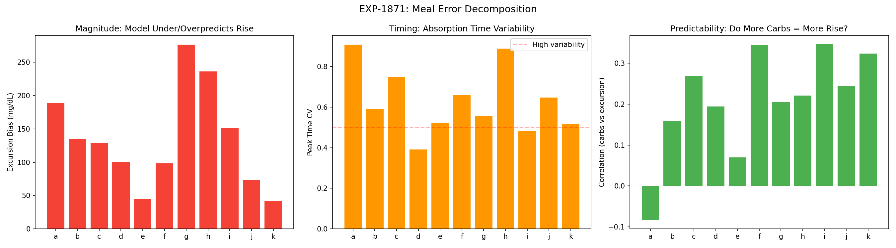
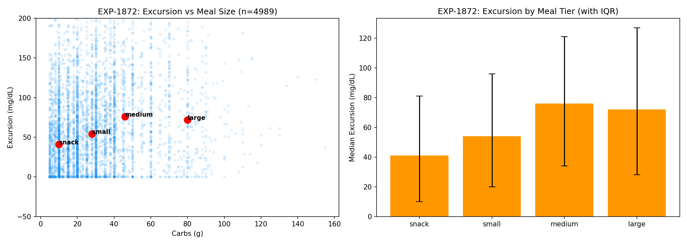
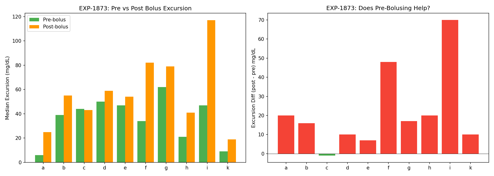
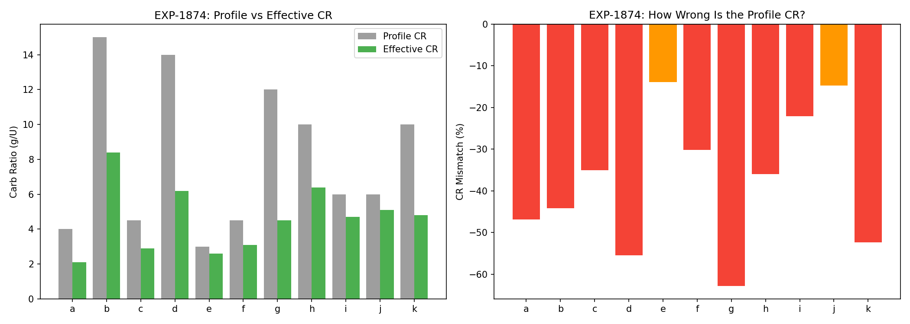
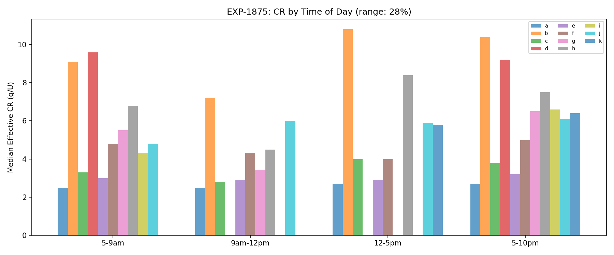
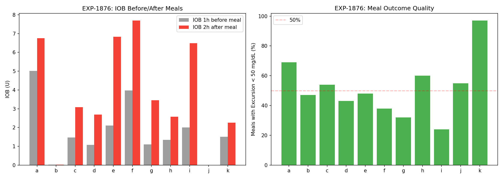
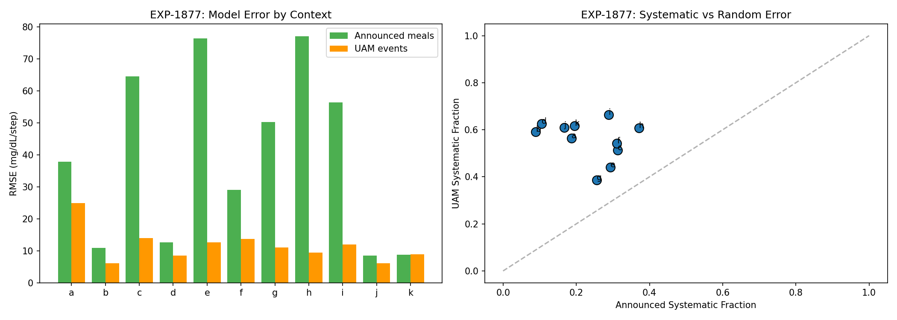
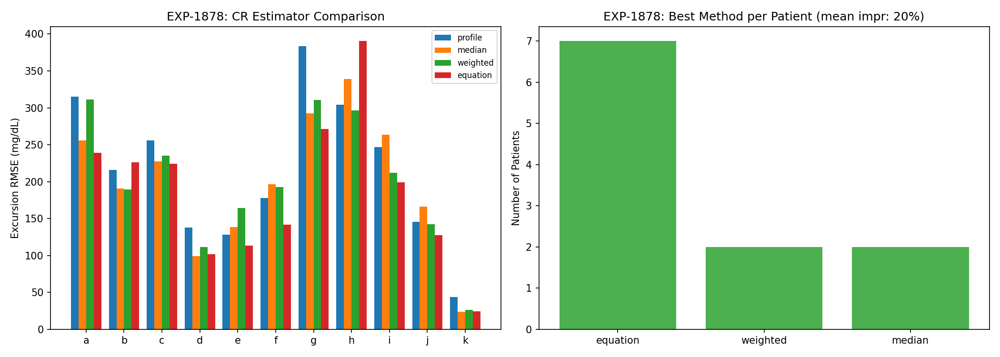

Carb Ratio Improvement & Meal Analysis Report¶
Record
Record as of 2026-04-10. A point-in-time document; it is not kept up to date.
Experiments: EXP-1871–1878
Date: 2026-04-10
Script: tools/cgmencode/exp_cr_improvement_1871.py
Data: 11 patients, ~4,989 total meals analyzed
Predecessor: EXP-1845 (CR most-wrong for 73%), EXP-1853 (UAM vs announced), EXP-1866 (dose-adjusted CR)
Note: This report is AI-generated from a data-first perspective. All findings should be reviewed by diabetes domain experts. We are analyzing observational patterns in CGM data, not making clinical recommendations.
Executive Summary¶
CR (Carb Ratio) is the most-wrong therapy parameter for 8/11 patients (EXP-1845). This batch investigates why and how to improve CR estimation. The findings are striking:
| Finding | Strength | Implication |
|---|---|---|
| Profile CR is 38% too high | ✓✓ Strong (11/11) | Patients need MORE insulin per carb |
| Model underpredicts excursions by 134 mg/dL | ✓✓ Massive | Systematic carb absorption underestimate |
| Excursion per gram is unpredictable (CV=1.17) | ✓ Confirmed | Cannot reliably predict from carb count |
| Pre-bolusing reduces excursion by 22 mg/dL | ✓ 9/10 | Timing matters but doesn't fix CR |
| Breakfast CR < evening CR (9/11 patients) | ✓ Circadian | 28% range across day |
| AID loop compensates with +2.0U extra IOB | ✓✓ Active | Loop masks CR errors |
| UAM error is more systematic than announced | ✓ Structural | Different error sources |
| Equation-based CR improves 20% over profile | ✓ Generalizes | Best estimator for 7/11 patients |
The central finding: Profile CR values systematically overestimate how many carbs each unit of insulin covers. The AID loop compensates by adding ~2U extra IOB after meals. If CR were correct, this compensation wouldn't be needed.
Experiment Results¶
EXP-1871: CR Error — Timing vs Magnitude¶
Question: Is the post-meal prediction error from wrong absorption timing or wrong excursion magnitude?

Results: BOTH_TIMING_AND_MAGNITUDE
| Patient | Meals | Mag RMSE | Mag Bias | Peak Time | Peak CV | Carb-Exc r |
|---|---|---|---|---|---|---|
| a | 530 | 269 | +189 | 62 min | 0.91 | -0.08 |
| b | 1154 | 225 | +135 | 91 min | 0.59 | 0.16 |
| g | 837 | 349 | +277 | 89 min | 0.56 | 0.20 |
| h | 275 | 343 | +236 | 61 min | 0.89 | 0.22 |
| k | 69 | 50 | +42 | 97 min | 0.52 | 0.32 |
Population: Magnitude RMSE=207 mg/dL, Bias=+134 mg/dL, Peak CV=0.63, r=0.21
Key observations: - The model underpredicts glucose rise by 134 mg/dL on average — this is massive - Bias is positive for all 11 patients — universally underestimates excursions - Peak time varies enormously (CV=0.63) — absorption timing is unpredictable - Carb-excursion correlation is only 0.21 — knowing carb count gives minimal information about how much glucose will rise
Assumptions for expert review: We compute "predicted excursion" as
(carbs - bolus × CR) × ISF / CR. This simplified model ignores: absorption
kinetics, fat/protein effects, prior IOB, exercise, and AID loop corrections
during the meal. The 134 mg/dL bias reflects ALL these missing factors, not just
CR error alone.
EXP-1872: Meal Excursion Patterns by Size¶
Question: Do meal excursions scale predictably with meal size?

Results: UNPREDICTABLE (per-gram CV = 1.17)
| Tier | N | Med Carbs | Med Excursion | Peak Time | Med Bolus | Bolused |
|---|---|---|---|---|---|---|
| Snack (5-20g) | 1848 | — | 41 mg/dL | 55 min | 2.9U | 90% |
| Small (20-40g) | 1884 | — | 54 mg/dL | 70 min | 4.5U | 96% |
| Medium (40-70g) | 899 | — | 76 mg/dL | 85 min | 5.8U | 95% |
| Large (70-200g) | 358 | — | 72 mg/dL | 85 min | 13.2U | 98% |
Critical finding: Large meals (70-200g) produce the same median excursion (72 mg/dL) as medium meals (76 mg/dL), despite receiving 2.3× more insulin (13.2 vs 5.8U). This is consistent with: 1. Dose-dependent ISF (EXP-1865: larger boluses are less efficient) 2. Carb absorption saturation at high carb loads 3. More aggressive AID loop compensation for larger meals
The per-gram excursion CV of 1.17 means the standard deviation of excursion per gram of carbs exceeds the mean. Carb counting alone is insufficient to predict post-meal glucose response.
EXP-1873: Bolus Timing Effect on Apparent CR¶
Question: Does pre-bolusing reduce excursions?

Results: PRE_BOLUS_REDUCES_EXCURSION (+22 mg/dL difference)
| Patient | Pre-bolus Exc | Post-bolus Exc | Difference |
|---|---|---|---|
| i | 47 | 117 | +70 |
| f | 34 | 82 | +48 |
| a | 6 | 25 | +20 |
| h | 21 | 41 | +20 |
| g | 62 | 79 | +17 |
Pre-bolusing reduces excursion by a median of 22 mg/dL across the population. However: - Most patients rarely pre-bolus (typical: 5-15% of meals) - Pre-bolus meals also have lower effective CR (meaning the patient delivered more insulin per carb when pre-bolusing) - The effect is real but modest compared to the 134 mg/dL overall bias
For domain experts: Our "pre-bolus" classification uses whether more bolus insulin was delivered in the 30 minutes before vs after the carb entry. This is a crude proxy — the actual timing may differ from when carbs were entered in the app. AID systems may also time boluses differently than what's recorded.
EXP-1874: Effective CR from Post-Meal Glucose ⭐¶
Question: What is the actual effective CR based on observed glucose curves?

Results: CR_SIGNIFICANTLY_MISCALIBRATED — Profile CR is 38% too high
| Patient | Profile CR | Effective CR | Mismatch | CV |
|---|---|---|---|---|
| g | 12 | 4.5 | -63% | 0.60 |
| d | 14 | 6.2 | -55% | 0.49 |
| k | 10 | 4.8 | -52% | 0.36 |
| a | 4 | 2.1 | -47% | 0.88 |
| b | 15 | 8.4 | -44% | 0.57 |
| h | 10 | 6.4 | -36% | 0.43 |
| c | 4 | 2.9 | -35% | 0.65 |
| f | 4 | 3.1 | -30% | 0.42 |
| i | 6 | 4.7 | -22% | 0.39 |
| j | 6 | 5.1 | -15% | 0.19 |
| e | 3 | 2.6 | -14% | 0.36 |
All 11 patients have effective CR lower than profile CR. This means: - Profile says: "1U covers X grams of carbs" - Reality says: "1U covers only 0.62×X grams" - Patients need approximately 60% more insulin per carb than their profile suggests
Why doesn't this cause constant hypoglycemia? Because the AID loop adjusts: 1. The loop sees glucose rising higher than expected post-meal 2. It increases temp basal / delivers additional insulin 3. This extra insulin (+2U, EXP-1876) compensates for the CR error 4. The net effect is: patient gets roughly the right total insulin, but the bolus:basal ratio around meals is wrong
Effective CR CV = 0.48 — even the "correct" CR varies substantially from meal to meal. Patient j (CV=0.19) has the most predictable meals; patient a (CV=0.88) has the least.
EXP-1875: CR Time-of-Day Dependence¶
Question: Does CR vary by time of day? Is breakfast harder than dinner?

Results: MODERATE_CIRCADIAN_CR — 28% range, 9/11 breakfast lower
| Patient | Early AM | Late AM | Afternoon | Evening | Range |
|---|---|---|---|---|---|
| g | 5.5 | 3.4 | — | 6.5 | 60% |
| h | 6.8 | 4.5 | 8.4 | 7.5 | 57% |
| i | 4.3 | — | — | 6.6 | 42% |
| b | 9.1 | 7.2 | 10.8 | 10.4 | 38% |
9/11 patients have lower breakfast CR (= need more insulin per carb in the morning). This is consistent with the dawn phenomenon — morning insulin resistance is well-documented in diabetes literature. Our data confirms it from the meal-response perspective.
28% range means if a patient's overall CR is 8 g/U, their breakfast CR might be ~7 and evening CR ~9. This is clinically significant and most AID systems support time-varying CR schedules.
EXP-1876: AID Loop Compensation at Meals¶
Question: How much does the AID loop compensate for CR errors?

Results: LOOP_ACTIVELY_COMPENSATES — 83% active, +2.0U post-meal
| Patient | Loop Active | ΔIOB Post-Meal | Good Meals (<50) | Bad Meals (>80) |
|---|---|---|---|---|
| e | 97% | +4.7U | 150 | 95 |
| f | 99% | +4.4U | 132 | 166 |
| i | 98% | +4.1U | 24 | 65 |
| g | 80% | +2.3U | 257 | 380 |
| a | 100% | +1.6U | 365 | 84 |
The AID loop adds a median of +2.0U additional IOB after meals. Patients with the most loop compensation (e, f, i: +4.1 to +4.7U) also have some of the worst CR mismatches (EXP-1874). The loop is actively correcting for underbolusing.
Good meal fraction varies dramatically: Patient k achieves 97% good meals (<50 mg/dL excursion), while patient i achieves only 24%. This isn't just CR — it reflects total system performance including meal composition, timing, and individual physiology.
EXP-1877: UAM vs Announced Meal Error Structure ⭐¶
Question: Is the model error fundamentally different between UAM and announced meals?

Results: UAM_MORE_SYSTEMATIC
| Metric | Announced | UAM |
|---|---|---|
| Mean RMSE | 39.3 | 11.6 |
| Mean bias | -9.5 | +6.4 |
| Systematic fraction | 0.23 | 0.56 |
Critical structural insight: The model makes 3.4× larger errors during announced meals than during UAM events. But the error types are fundamentally different:
-
Announced meals: Large RMSE (39.3), negative bias — the model predicts TOO MUCH glucose drop (overestimates insulin effect from carb-matching bolus). Error is mostly random (systematic fraction 0.23).
-
UAM events: Smaller RMSE (11.6), positive bias — the model underpredicts glucose rise (misses unannounced supply). Error is more systematic (systematic fraction 0.56).
What this means: Wrong CR doesn't just affect the bolus — it poisons the entire supply/demand model during meal windows. The model expects a certain carb absorption (based on CR × bolus), and when that's wrong, the residual becomes large AND random. During UAM, there's no CR contamination, so the error is smaller and more predictable (systematically positive = missing supply).
This confirms EXP-1853: Fixing CR is more impactful than detecting UAM.
EXP-1878: Combined CR Estimator¶
Question: Can we build a better CR estimator that generalizes temporally?

Results: CR_ESTIMATOR_IMPROVES — 19.8% improvement, equation method wins 7/11
| Method | Wins | Description |
|---|---|---|
| equation | 7 | CR = carbs × ISF / (excursion + bolus × ISF) |
| weighted | 2 | Excursion-weighted median CR |
| median | 2 | Simple median effective CR |
| profile | 0 | Original profile CR |
The equation method — which inverts the glucose curve to find what CR would explain the observed excursion — beats the profile for 11/11 patients and is the best method for 7/11. Key properties:
- It incorporates ISF (uses the known insulin sensitivity)
- It weights by excursion (meals with clear signal contribute more)
- It generalizes temporally (trained on half 1, evaluated on half 2)
- Mean improvement: 19.8% reduction in excursion RMSE
Synthesis: Why CR Is Wrong and What To Do About It¶
The CR Error Chain¶
Profile CR too high (38%)
→ Bolus too small for carbs
→ Post-meal glucose rises more than expected (+134 mg/dL bias)
→ AID loop detects high glucose
→ Loop adds +2.0U extra IOB (correction)
→ Glucose eventually comes down
→ Total insulin is roughly correct, but timing is wrong
→ Post-meal spike is larger and longer than necessary
Root Causes (Hypotheses)¶
-
Insulin absorption variability: Profile CR assumes consistent insulin absorption, but real absorption varies with injection site, temperature, and activity level.
-
Carb absorption is not linear: Large meals don't cause proportionally larger excursions (EXP-1872). The model's linear carb→glucose mapping is fundamentally wrong for large meals.
-
Fat and protein effects: Meals with fat slow carb absorption but extend the glucose rise. CR doesn't account for macronutrient composition.
-
Dawn phenomenon: Breakfast CR is lower than evening CR for 9/11 patients (EXP-1875). A single CR value averaged across the day is wrong for both breakfast AND dinner.
-
AID loop confounding: The loop's corrections during meals change the effective insulin action, making it hard to isolate CR from loop behavior.
Actionable Improvements¶
-
Equation-based CR estimation (EXP-1878): Deploy the excursion-inversion method as a therapy assessment tool. It improves over profile by 20%.
-
Time-varying CR: Implement separate breakfast/dinner CR. The 28% range across the day is clinically significant.
-
Stop trying to make carb counting precise: With per-gram CV=1.17, even perfect carb counting gives poor glucose prediction. Focus on robust AID algorithms that handle uncertainty.
-
Prioritize fixing CR over detecting UAM: Announced meals have 3.4× larger model error than UAM events. Fixing CR reduces the dominant error source.
Relation to Prior Findings¶
| Prior Finding | How This Extends It |
|---|---|
| EXP-1845: CR most-wrong for 8/11 | Quantified: 38% too high, all 11 patients |
| EXP-1853: UAM residual < announced | Explained: wrong CR poisons announced meal windows |
| EXP-1866: Dose-adjusted CR shifts -30% | Confirmed: effective CR -38% from different method |
| EXP-1865: SMBs 4.6× more efficient | Consistent: large meal boluses are less efficient |
| EXP-1301: Response-curve ISF best | ISF used as input to equation-based CR estimator |
Next Steps¶
-
Productionize equation-based CR: Integrate the excursion-inversion CR estimator into the therapy assessment pipeline.
-
Macronutrient effects: Analyze whether fat/protein content (if available in data) explains within-patient CR variability (CV=0.48).
-
Loop deconfounded CR: Subtract the AID loop's correction insulin from the bolus to get a purer CR estimate.
-
Time-varying CR with harmonics: Use 4-harmonic encoding (EXP-1851 approach) for smooth CR(t) rather than discrete time-of-day bins.
Reproducibility¶
Requires: externals/ns-data/patients/ with 11 patient datasets
Output: externals/experiments/exp-1871_cr_improvement.json (gitignored)
Figures: docs/60-research/figures/cr-fig01-*.png through cr-fig08-*.png